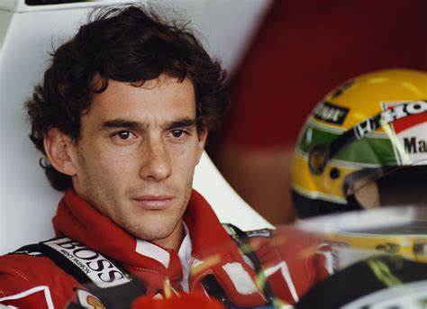
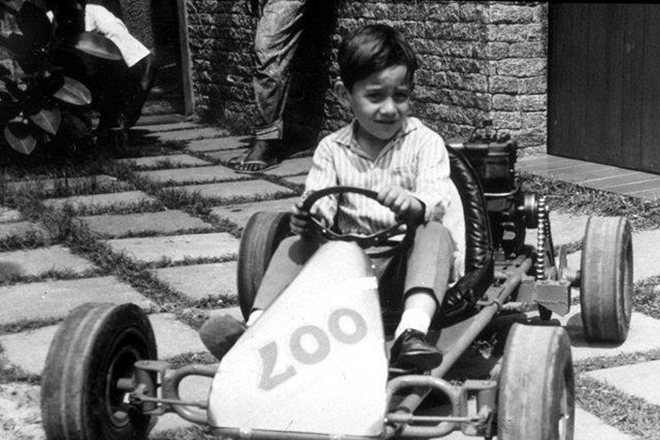
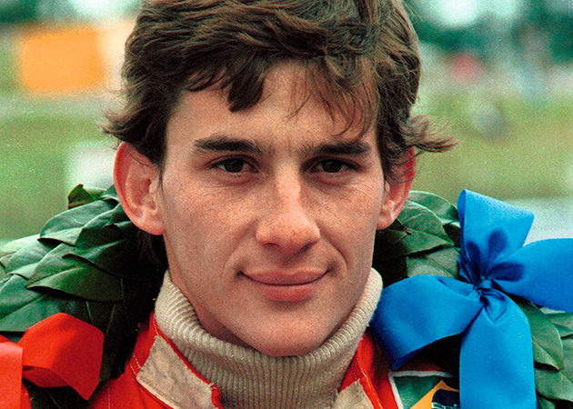
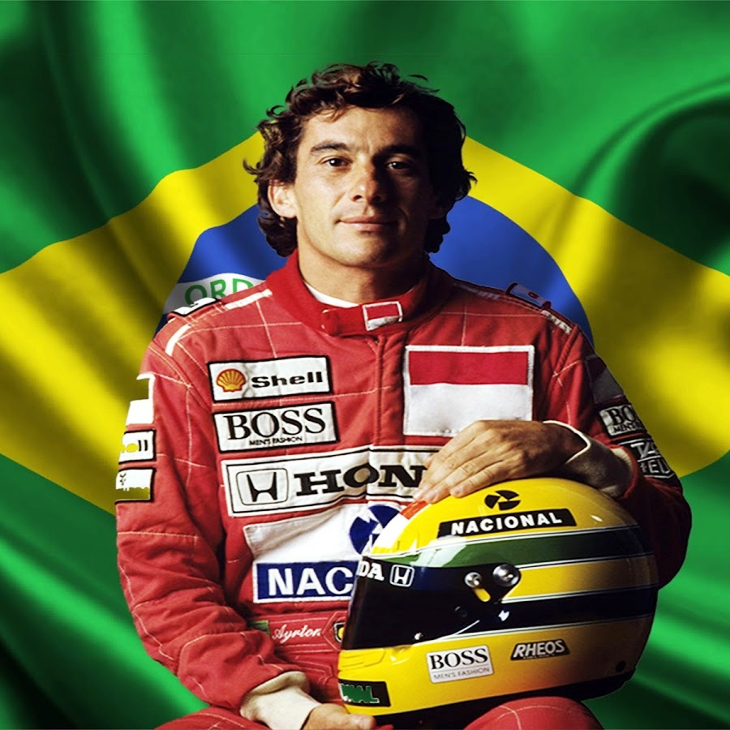

Ayrton Senna (1960-1994) foi um piloto brasileiro de Fórmula 1. Ídolo do automobilismo conquistou três vezes o campeonato mundial, em 1988, 1990 e 1991. Morreu no auge da carreira, pilotando no circuito de Ímola, na Itália.
Ayrton Senna da Silva nasceu em São Paulo, no dia 21 de março de 1960. Filho de empresário do ramo metalúrgico, com quatro anos de idade ganhou seu primeiro kart. Com sete anos começou a treinar no kartódromo de Interlagos, em São Paulo.
Ayrton Senna iniciou sua carreira automobilística com o patrocínio de seu pai. Conquistou diversos títulos correndo no Kart: foi campeão paulista na categoria júnior, campeão brasileiro e campeão sul-americano, além do vice-campeonato mundial em 1979 e 1980.
Ada era fascinada por matemática e poesia (para desespero de sua mãe). Aos doze anos, encantou-se pela engenharia mecânica e escreveu um livro chamado Flyology (ou Voologia), com desenhos de um plano para a construção de uma máquina de voar. Ao contar para sua mãe sobre a máquina, Annabelle achou que Ada estava se desviando dos estudos e a reprimiu. Então, pediu para que Ada focasse em se tornar uma dama.
O dia 1º de março se tornou marcante na história do automobilismo mundial. Há exatos 40 anos, em 1981, portanto, o jovem Ayrton Senna da Silva disputou a primeira corrida de sua carreira. No circuito inglês de Brands Hatch, o então piloto da equipe Van Diemen e futuro tricampeão da F1 foi o quinto colocado na prova de abertura do Campeonato Inglês de Fórmula Ford 1600. Era o pontapé inicial para uma das carreiras mais vitoriosas e celebradas de todos os tempos.
Em 1984 Ayrton Senna ingressou na Fórmula 1, pela equipe Toleman e na segunda competição já conquistou seu primeiro ponto. No final da temporada, além de 13 pontos conquistados subiu três vezes no pódio.
O primeiro pódio de Ayrton Senna na F-1 foi conquistado no autódromo de Mônaco, quando conquistou o 2.º lugar, após largar na 14.ª colocação, em um dia de muita chuva. O segundo pódio de Senna na F-1, foi no circuito de Brands Hatch, na Inglaterra quando conquistou o 3.º lugar. O terceiro e último pódio de Senna na Toleman veio em Portugal, quando conquistou o terceiro lugar. A vitória ficou com Niki Lauda e a segunda foi conquistada por Prost. Em 1985 Senna assinou com a equipe Lotus. Entre os anos de 1985 e 1987 participou de 48 grandes prêmios e venceu seis.
Em 1987 Ayrton Senna assinou com a McLaren-Honda. Em 1988 subiu ao pódio pela primeira vez, como campeão mundial de Fórmula 1, no GP de Suzuka no Japão, depois de uma disputa acirrada contra o companheiro Alain Prost. Naquele ano, Senna conquistou 13 pole positions e venceu 8 das 16 provas do campeonato.
O bicampeonato mundial veio em 1990, também em Suzuka, no penúltimo GP da temporada, quando deu o troco no seu rival Alain Prost, que no ano anterior havia vencido o campeonato de forma pouco ética, quando nas voltas finais, Senna tentou ultrapassá-lo, mas houve o choque e os dois saírem da pista.
Em 1994, Ayrton Senna foi contratado pela equipe Williams. No dia 20 de janeiro fazia seu primeiro teste com o carro da equipe inglesa. A primeira corrida da temporada de 1994 foi em Interlagos, no Brasil, onde conquistou a pole position, mas rodou ao tentar perseguir Schumacher e abandonou a corrida. A segunda prova foi no GP do Pacífico, no Japão e durou apenas poucos segundos para Senna, quando seu carro foi tocado por Mika Hakkinen, da McLaren, rodou e ainda foi atingido por Nicola Larini da Ferrari.
No dia 1 de maio de 1994, na sétima volta do circuito de Ímola, na Itália, durante o Grande Prêmio de San Marino, o carro de Senna, voando a 300 km/h, chocou-se contra o muro de proteção na curva Tamburello, provocando a morte do piloto.Ayrton Senna foi enterrado no Cemitério do Morumby, em São Paulo, no dia 5 de maio de 1994.
Conheça outras mulheres que fizeram história na tecnologia: